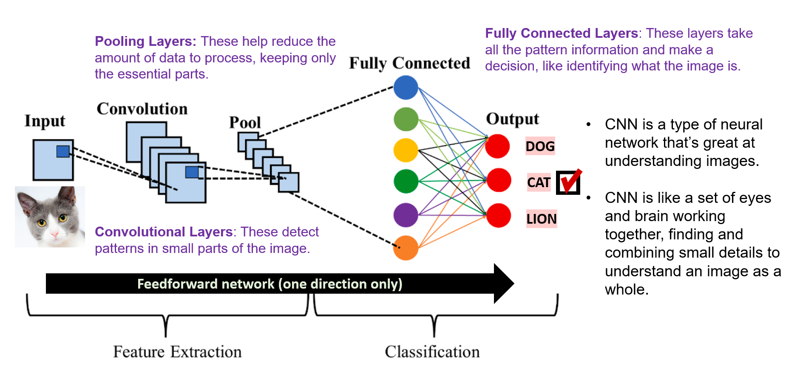

How does a CNN recognize a cat?
A Convolutional Neural Network (CNN) finds patterns in pictures and combines them to help identify what an image shows.
Explore the diagram: select a number to see a short explanation.

1 · Input
Start with the cat picture. The image is the information the CNN receives.
Watch a CNN recognize a cat
Press Play to follow the process. Each step includes an explanation below the animation; pause whenever you want more time to read.
Concept animation: the feature tiles illustrate visual clues, not computed feature maps.
From a picture to a category.
Each stage has a simple role in the prediction shown above.
Input: start with the picture.
The network receives an image. In this example, the input is the photo of a cat.
Convolution: look for small patterns.
The network looks at small parts of the image. Early layers may pick up edges or textures; later layers can combine patterns into more complex features.
Pooling: make the information smaller.
Pooling summarizes nearby information so there is less to process. It keeps useful signals while leaving out some detail.
Fully connected: put the clues together.
These layers combine the pattern information to help decide which category fits the image.
Output: make a prediction.
The choices in the diagram are dog, cat, and lion. The illustration selects cat as the predicted category.
Main idea: A CNN combines small visual patterns to help recognize the whole picture.
Where might you see CNNs?
Examples include identifying objects in photos, analyzing medical images, recognizing faces, and detecting objects around a vehicle.
The diagram shows one common design. CNNs can be organized in different ways, and their predictions depend on what they learned from training examples.